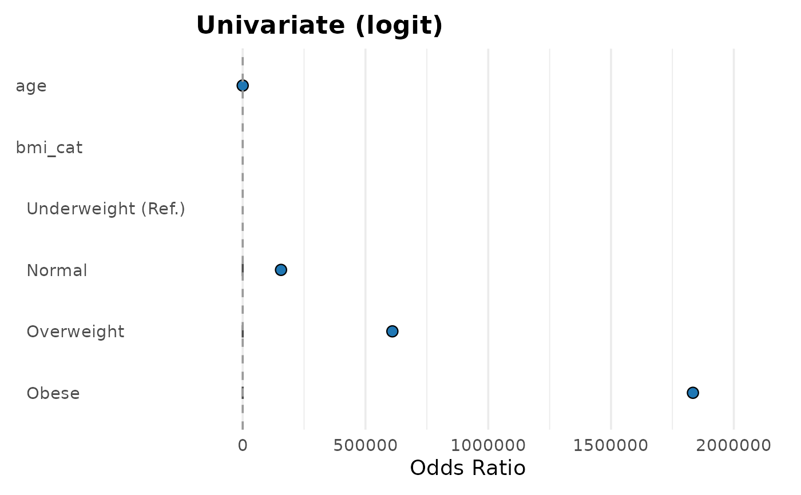

Creates a forest plot from a `gtsummary` object. Supports both univariate and multivariable models with hierarchical labels for categorical variables. Designed to work seamlessly with outputs from functions like `uni_reg()` and `multi_reg()`.
Usage
plot_reg(
tbl,
title = NULL,
ref_line = 1,
order_y = NULL,
log_x = FALSE,
xlim = NULL,
breaks = NULL,
point_color = "#1F77B4",
errorbar_color = "#4C4C4C",
base_size = 14,
show_ref = TRUE
)Arguments
- tbl
A `gtsummary` object from regression functions
- title
Optional plot title (character).
- ref_line
Numeric value for the reference line (default = 1).
- order_y
Optional character vector to the customise y-axis order
- log_x
Logical. If `TRUE`, uses a logarithmic x-axis (default = FALSE).
- xlim
Optional numeric vector specifying x-axis limits
- breaks
Optional numeric vector for x-axis tick breaks.
- point_color
Color of the points (default is automatic).
- errorbar_color
Color of the error bars (default is automatic).
- base_size
Base font size for text elements.
- show_ref
Logical. If `TRUE`, includes reference in the plot.
Examples
# \donttest{
if (requireNamespace("mlbench", quietly = TRUE)) {
data("PimaIndiansDiabetes2", package = "mlbench")
library(dplyr)
library(gtregression)
# Prepare data
pima <- PimaIndiansDiabetes2 |>
mutate(
diabetes = ifelse(diabetes == "pos", 1, 0),
bmi_cat = cut(
mass,
breaks = c(-Inf, 18.5, 24.9, 29.9, Inf),
labels = c("Underweight", "Normal", "Overweight", "Obese"))
)
# Univariate logistic regression
uni_rr <- uni_reg(
data = pima,
outcome = "diabetes",
exposures = c("age", "bmi_cat"),
approach = "logit"
)
plot_reg(uni_rr)
}
#> Warning: glm.fit: fitted probabilities numerically 0 or 1 occurred
#> Warning: glm.fit: fitted probabilities numerically 0 or 1 occurred
#> Warning: glm.fit: fitted probabilities numerically 0 or 1 occurred
#> Warning: glm.fit: fitted probabilities numerically 0 or 1 occurred
#> Warning: glm.fit: fitted probabilities numerically 0 or 1 occurred
#> Warning: glm.fit: fitted probabilities numerically 0 or 1 occurred
#> Warning: glm.fit: fitted probabilities numerically 0 or 1 occurred
#> Warning: glm.fit: fitted probabilities numerically 0 or 1 occurred
#> Warning: glm.fit: fitted probabilities numerically 0 or 1 occurred
#> Warning: glm.fit: fitted probabilities numerically 0 or 1 occurred
#> Warning: glm.fit: fitted probabilities numerically 0 or 1 occurred
#> Warning: glm.fit: fitted probabilities numerically 0 or 1 occurred
#> Warning: glm.fit: fitted probabilities numerically 0 or 1 occurred
#> Warning: glm.fit: fitted probabilities numerically 0 or 1 occurred
#> Warning: glm.fit: fitted probabilities numerically 0 or 1 occurred
#> Warning: glm.fit: fitted probabilities numerically 0 or 1 occurred
#> Warning: glm.fit: fitted probabilities numerically 0 or 1 occurred
#> Warning: glm.fit: fitted probabilities numerically 0 or 1 occurred
#> Warning: glm.fit: fitted probabilities numerically 0 or 1 occurred
#> Warning: glm.fit: fitted probabilities numerically 0 or 1 occurred
#> Warning: glm.fit: fitted probabilities numerically 0 or 1 occurred
#> Warning: glm.fit: fitted probabilities numerically 0 or 1 occurred
#> Warning: glm.fit: fitted probabilities numerically 0 or 1 occurred
#> Warning: glm.fit: fitted probabilities numerically 0 or 1 occurred
#> Warning: glm.fit: fitted probabilities numerically 0 or 1 occurred
#> Warning: glm.fit: fitted probabilities numerically 0 or 1 occurred
#> Warning: glm.fit: fitted probabilities numerically 0 or 1 occurred
#> Warning: glm.fit: fitted probabilities numerically 0 or 1 occurred
#> Warning: glm.fit: fitted probabilities numerically 0 or 1 occurred
#> Warning: glm.fit: fitted probabilities numerically 0 or 1 occurred
#> Warning: glm.fit: fitted probabilities numerically 0 or 1 occurred
#> Warning: glm.fit: fitted probabilities numerically 0 or 1 occurred
#> Warning: glm.fit: fitted probabilities numerically 0 or 1 occurred
#> Warning: glm.fit: fitted probabilities numerically 0 or 1 occurred
#> Warning: glm.fit: fitted probabilities numerically 0 or 1 occurred
#> Warning: glm.fit: fitted probabilities numerically 0 or 1 occurred
#> Warning: glm.fit: fitted probabilities numerically 0 or 1 occurred
#> Warning: glm.fit: fitted probabilities numerically 0 or 1 occurred
#> Warning: glm.fit: fitted probabilities numerically 0 or 1 occurred
#> Warning: glm.fit: fitted probabilities numerically 0 or 1 occurred
#> Warning: collapsing to unique 'x' values
#> Warning: Removed 5 rows containing missing values or values outside the scale range
#> (`geom_errorbarh()`).

# }